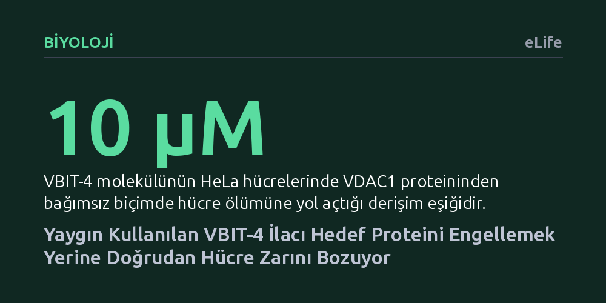

BIYOLOJI · eLife · 2026-10-15
Araştırmacılar, mitokondri proteini VDAC1'in kümeleşmesini durdurduğu varsayılan VBIT-4 molekülünün etki mekanizmasını inceledi. VBIT-4'ün hedeflenen proteini etkilemediği, aksine mikromolar derişimlerde doğrudan lipit zarına sızıp zar bütünlüğünü bozarak geçirgenliği artırdığı gösterildi.
Yıllardır belirli bir hedef proteine bağlandığı sanılarak yürütülen çalışmaların ve geliştirilen ilaç adaylarının aslında sadece hücre zarını tahrip eden genel bir kimyasala dayanıyor olabileceğini gösterir.

Hücrelerimizin enerji santralleri olan mitokondriler, yaşam ile programlanmış hücre ölümü arasındaki hassas dengeyi yöneten kritik organellerdir. Bu organelin dış zarında en bol bulunan protein olan voltaj bağımlı anyon kanalı (VDAC1), metabolit transferinde ana kapı görevini üstlenir. Biyoloji dünyasında uzun süredir VDAC1 proteinlerinin yan yana gelerek kümeler oluşturmasının (oligomerizasyon), mitokondriyal DNA salınımı ve hücre ölümü gibi süreçleri tetiklediği kabul ediliyordu.
Bu kümeleşme sürecini durdurmak ve mitokondri hasarına bağlı patolojileri engellemek amacıyla çeşitli moleküller test edildi. Bu moleküller arasında en yaygın kullanılanı olan VBIT-4, literatürde VDAC1 kümeleşmesini seçici olarak engelleyen bir inhibitör olarak kabul gördü ve çok sayıda araştırmada bu kabulle uygulandı. Ancak ilacın bu etkiyi moleküler düzeyde tam olarak nasıl sağladığına dair ayrıntılı bir mekanizma doğrulaması şimdiye kadar yapılmamıştı.
Araştırma ekibi, VBIT-4'ün VDAC1 kümeleşmesini gerçekten durdurup durdurmadığını test etmek için kapsamlı bir biyofiziksel deney seti tasarladı. Çalışmanın temelinde, tekil protein moleküllerini ve lipit zarlarındaki hareketlerini nanometre ölçeğinde anlık olarak izleyebilen yüksek hızlı atomik kuvvet mikroskopisi (AFM) yer aldı. Bu yöntem sayesinde proteinlerin zar üzerindeki kümelenme biçimleri doğrudan görselleştirildi.
Gözlemleri doğrulamak adına araştırmacılar, elektrofizyoloji ölçümleriyle zarın elektriksel iletkenliğini takip etti ve mikro ölçekli termoforez ile moleküler bağlanma dinamiklerini ölçtü. Ayrıca kaba taneli moleküler dinamik simülasyonlarıyla molekülün lipit çift katmanıyla fiziksel etkileşimi modellendi. Son olarak, bu biyofiziksel mekanizmanın yaşayan hücrelerdeki yansımasını görmek üzere standart HeLa kanser hücrelerinde hücre canlılığı testleri gerçekleştirildi.
Deney sonuçları bilimsel literatürdeki yerleşik varsayımı çürüttü. Yüksek hızlı atomik kuvvet mikroskobu analizleri, ortama VBIT-4 eklenmesinin VDAC1 protein kümelerinin ne dağılımında ne de boyutunda hiçbir değişiklik yaratmadığını net bir şekilde ortaya koydu. Dahası, elektrofizyolojik ölçümler bileşiğin kanalın elektriksel iletim özelliklerine de etki etmediğini gösterdi.
Asıl çarpıcı bulgu ise proteinin bulunmadığı lipit zarlarında kaydedildi. VBIT-4, mikromolar düzeydeki derişimlerde doğrudan lipit çift katmanının içine yerleşerek zar yapısını bozuyor ve zarda kontrolsüz geçirgenliğe yol açan kusurlar oluşturuyordu. Yaşayan HeLa hücrelerinde yapılan deneyler de bu tabloyu doğruladı: 10 mikromoların üzerindeki VBIT-4 derişimleri, ortamda VDAC1 proteini olsun ya da olmasın hücreleri öldürüyordu. Kısacası VBIT-4, hedefini seçen özgül bir protein inhibitörü değil, zarı doğrudan tahrip eden zar-aktif bir bileşikti.
Bu bulgular, bugüne kadar VBIT-4 kullanılarak yürütülmüş ve VDAC1 engellenmesine atfedilmiş çok sayıda çalışmanın sonuçlarının baştan yorumlanmasını gerektiriyor. Gözlemlenen hücresel etkilerin proteini durdurmaktan değil, ilacın hücre zarını fiziksel olarak hırpalamasından kaynaklandığı anlaşılıyor.
Çalışmanın bilime sunduğu en temel ders ise zar proteinlerini hedefleyen ilaç geliştirme süreçlerinin yöntemine ilişkindir. Bir molekülün zar proteinini engellediği sonucuna varmadan önce, o molekülün proteinin gömülü olduğu lipit zarıyla nasıl bir fiziksel etkileşime girdiğini sistematik olarak test etmek şarttır. Zarı bozan bir kimyasal, dışarıdan bakıldığında hedef proteini durdurmuş gibi yanıltıcı sonuçlar verebilir.